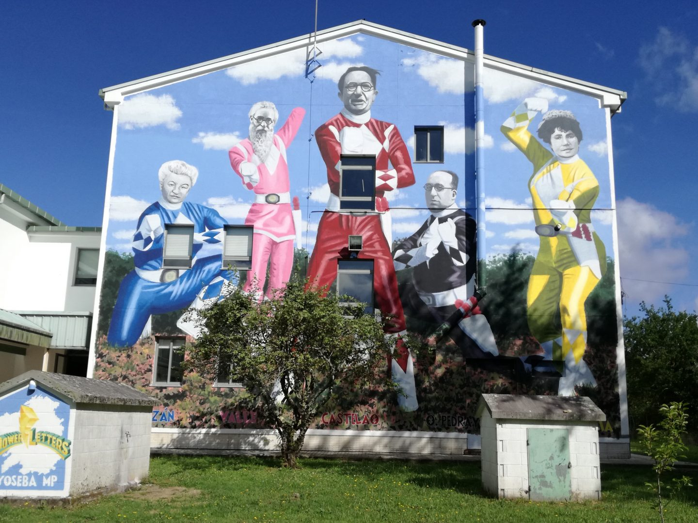

Instituto de educación secundaria, E.S.O., Bachillerato y ciclos. Cafetería, servicio de transporte escolar, pabellón polideportivo cubierto, pista deportiva exterior. FP Básica de Informática de Oficina, Ciclo Medio y Superior de informática y redes, FP Dual.
No Maximino Romero de Lema cumplimos 25 anos e quixemos facelo dun xeito especial: enchendo o centro de orixinais murais nos que a cultura galega e a tradición de Baio son as protagonistas. Decidimos facer esta iniciativa da man do grandisimo artista Yoseba MP.
O coñecidisimo programa galego DígochoEu estivo no I.E.S. Maximino Romero de Lema. Co seu alumnado aprendemos a distinguir árbores.
Hoxe o alumnado de FPB e o de 2º do Ciclo Superior participaron no programa
dos Almorzos saudables, unha iniciativa coa que apostamos por complementar
a formación do noso alumnado en nutrición a través de actividades que conxugan
saúde, benestar e pracer.
Nun ambiente agradable gozaron, despois dunha
pequena charla, do abano de opcións saudables que lles propuxemos para a primeira
comida do día e que, de seguro, lles axudou a enfrontar con enerxía saudable e duradeira
a longa xornada de clases que tiveron a continuación rendendo nas mesmas e controlando o apetito.